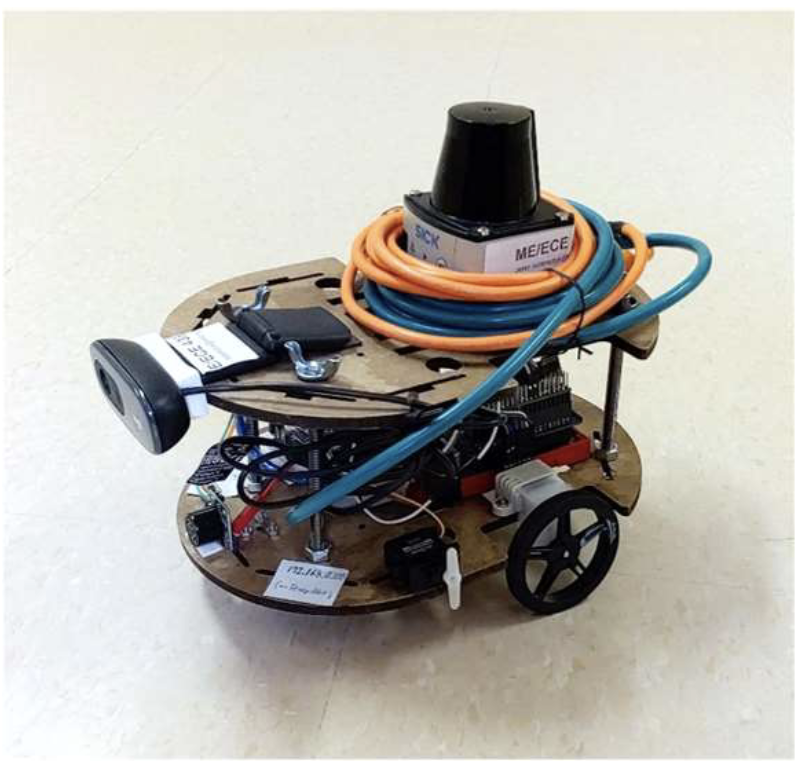
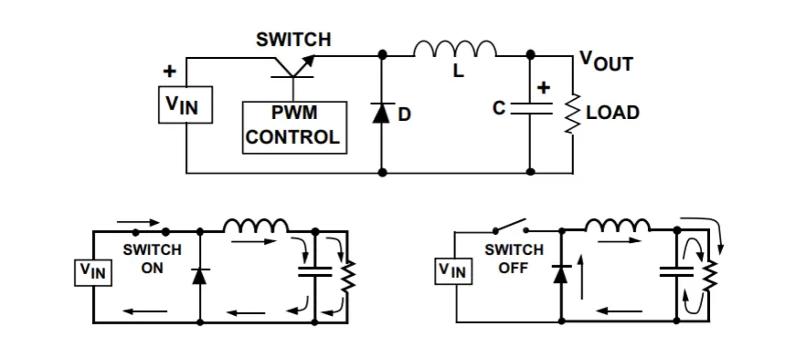
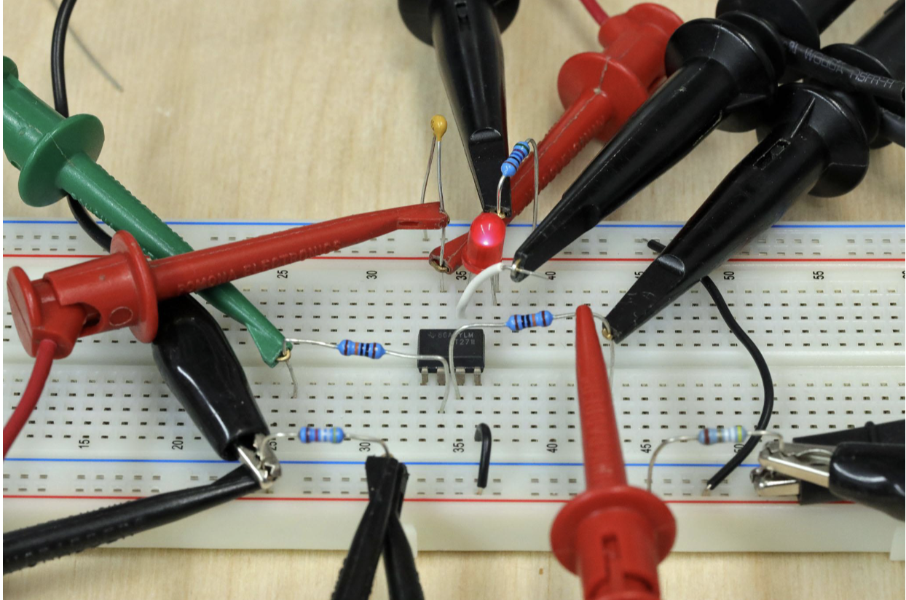

I am currently pursuing a degree in Electrical Engineering at the University of Wisconsin-Madison. My coursework has provided me with both theoretical knowledge and hands-on experience in various fields of electrical engineering. Below are some of the courses that have significantly shaped my academic journey.
Robotics Class

In my robotics class, I learned the fundamentals of robotics and kinematics, along with practical applications in programming robots using ROS2 (Robot Operating System 2). This course introduced me to motion planning, path optimization, and robotic control systems, which were applied in simulation and real-world projects.
Power Electronics

Power electronics has been one of the most exciting courses in my academic career. In this class, I studied different types of power converters, including buck, boost, and buck-boost converters. I also gained insights into designing and analyzing circuits used for efficient power conversion in applications such as battery chargers, motor controllers, and renewable energy systems.
Circuits Laboratory

My Circuits Laboratory class provided hands-on experience in designing, assembling, and testing various types of electronic circuits. I worked with oscilloscopes, function generators, and microcontrollers, gaining practical skills in troubleshooting and debugging real-world electronic systems.
Learn More About UW-Madison Engineering
For more information about the Electrical and Computer Engineering program at UW-Madison, visit the official UW-Madison ECE Department.